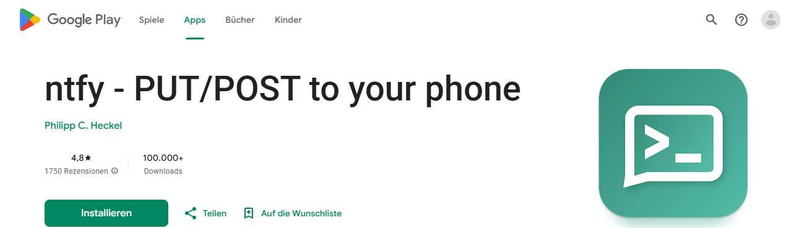
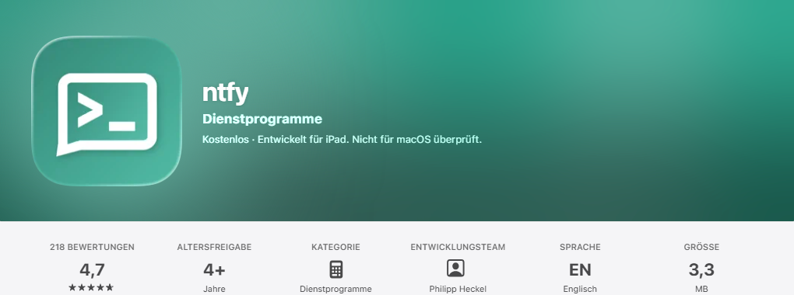

Push-Benachrichtigungen (ntfy)
Wenn eure Leitstelle Push-Benachrichtigungen eingerichtet hat, bekommt jeder mit der kostenlosen App ntfy bei einer Alarmierung sofort eine Nachricht aufs Handy – unabhängig davon, ob gerade ein Monitor offen ist.
Push-Benachrichtigungen funktionieren nur, wenn ein Admin vorher in Verwaltung → Einstellungen → Push-Benachrichtigungen ein ntfy-Topic für eure Leitstelle eingetragen hat. Frag im Zweifel euren Admin nach dem genauen Topic-Namen, z. B. deine-leitstelle-alarme.
Was ist ntfy?
ntfy ist ein kostenloser, quelloffener Push-Dienst. Man „abonniert“ ein sogenanntes Topic (einen frei wählbaren Kanalnamen) – jede Nachricht, die an dieses Topic gesendet wird, kommt dann als Push-Benachrichtigung auf allen Geräten an, die es abonniert haben. Einen Account braucht es dafür nicht.
Android einrichten
-
App installieren
„ntfy“ im Google Play Store suchen und installieren (Entwickler: ntfy.sh / Philipp C. Heckel), oder direkt über den Link:

-
Topic abonnieren
App öffnen → auf das + unten rechts tippen → „Subscribe to topic“. Den Topic-Namen eurer Leitstelle eingeben (z. B.
deine-leitstelle-alarme) und bestätigen. -
Fertig
Ab jetzt kommt bei jeder Alarmierung eurer Leitstelle eine Push-Benachrichtigung. Ein Test-Alarm aus der Einsatzerfassung heraus zeigt sofort, ob es funktioniert.
iOS (iPhone) einrichten
-
App installieren
„ntfy“ im App Store suchen und installieren, oder direkt über den Link:

-
Topic abonnieren
App öffnen → „Subscribe to topic“ bzw. das +-Symbol → Topic-Namen eurer Leitstelle eingeben und bestätigen.
-
Benachrichtigungen erlauben
Beim ersten Start fragt iOS nach der Erlaubnis für Mitteilungen – das muss erlaubt werden, sonst kommen keine Push-Benachrichtigungen an.
Eine ausführliche, bebilderte Anleitung mit allen Details pflegt ntfy selbst: docs.ntfy.sh – Subscribe from your phone.
Eigener Server statt ntfy.sh
Standardmäßig läuft ntfy über den öffentlichen, kostenlosen Server ntfy.sh. Nutzt eure Leitstelle stattdessen einen eigenen ntfy-Server, trägt ihr dessen Adresse beim Abonnieren zusätzlich ein („Use another server“/„Anderen Server verwenden“) – die genaue URL nennt euch euer Admin.
Wer den Topic-Namen kennt, kann ihn ebenfalls abonnieren (sofern kein eigener, zugriffsbeschränkter Server verwendet wird). Wählt daher einen nicht leicht zu erratenden Namen und gebt ihn nur innerhalb der Gruppe weiter.